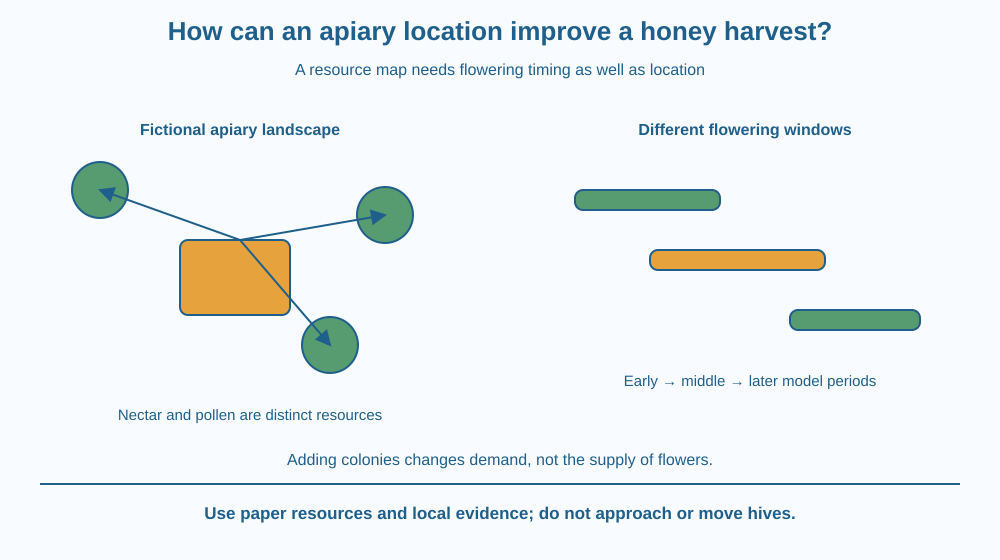

Explain why apiary location matters to honey production. Distinguish nectar, pollen and the timing of forage availability. Evaluate a location as a changing resource landscape without assuming that the nearest flowering plant or largest hive count guarantees a good harvest.
Two apiary sites look equally spacious, yet one may offer suitable flowers across a longer useful period. Another may have a brief abundance followed by a shortage. A photograph taken on one flowering day can hide that difference.
Bees need access to appropriate resources, and the surrounding landscape changes through time. A location decision therefore asks where resources are, when they are available and whether the colony can use them under local conditions.
The question is management of a resource schedule, not simply placing a box beside a colourful plant.
An apiary is a place where managed bee colonies are kept. The surrounding plants available as forage are often discussed as pasturage in school apiculture. Their identity, abundance and flowering schedule affect the resource opportunities.
Nectar supplies sugars that contribute to the material processed into honey. Pollen provides other important nutritional resources for the colony. The two are not interchangeable labels for the same substance collected from a flower.
A useful location considers more than one flowering moment. A sequence of suitable plants can provide resources over time, while a gap between flowering periods can create a shortage. Local weather and land management can change that schedule.
Distance and accessibility matter, but the nearest plant is not automatically the best resource. Quantity, suitability, flowering condition and competition influence the actual opportunity. This lesson gives no universal flight-distance radius for every bee species and landscape.
Colony type and condition also matter. Different managed species and local practices can have different requirements. An apiary plan should not treat every bee as identical or transfer one management recommendation to all settings.
Water access, appropriate shelter and surrounding hazards are additional conditions to assess. Pesticide exposure and nearby land use can affect suitability, but evaluating those risks requires local knowledge and responsible management, not a classroom guess.
Adding more colonies does not create more flowers. When the available forage is limited, competition can increase. A site that supports some colonies well may not support any arbitrary number equally well.
Honey yield depends on many factors beyond location, including colony health and management. We therefore explain the resource mechanism without inventing a kilogram-per-hive promise, recommending a stocking density or giving instructions to handle a hive.
Draw a map around a proposed apiary and attach a flowering-time strip to each resource patch. Compare not only patch distances but which strips overlap and which leave gaps.
Use different symbols for nectar and pollen contributions where the model includes that information. A bright flower symbol alone should not stand in for a complete resource assessment.
Then add another colony symbol without changing the landscape. Ask how the fixed resource supply is now shared. This makes the limitation of simply increasing hive count visible and separates resource availability from a box-counting measure of success.
The SVG shows an apiary symbol surrounded by several flowering patches with different timing bars. A gap in the combined schedule is highlighted as a possible management question.
Labels distinguish nectar and pollen, while a separate note identifies water, shelter and surrounding exposure as additional considerations. The map is fictional and has no real distance scale or recommended number of hives.
The graphic does not repeat pollination anatomy or natural food-chain relationships. Its target is a managed location choice based on resource access and timing, with explicit limits on yield predictions.

Apiculture in India operates in diverse landscapes and with different bee species and practices. Local flowering calendars and agricultural activities can therefore matter more than a generic national rule about the best place for every hive.
A school project can use plant photographs and an adult-supplied flowering calendar to compare hypothetical sites. It should not move colonies, approach hives or attempt to feed or collect bees.
Bees are important living organisms, not equipment for an unsupervised experiment. The practical work of establishing and inspecting an apiary belongs to trained people using suitable local guidance and precautions.
Use paper, a pencil and three fictional flowering-patch cards. No live insects or hive materials are needed.
The time labels are model categories, not real plant-calendar data. Do not present a named crop as always flowering at one date across India. State which local observations would be needed for a practical plan.
A site has an enormous brief bloom but little forage later. Another has smaller opportunities spread through the season. Why might their usefulness differ even if one photograph makes the first look richer?
Now imagine a nearby patch that becomes inaccessible or unsuitable because of local management. Explain why map distance alone cannot guarantee an actual resource. A plan must connect availability with the colony's opportunity to use it.
What does pasturage refer to in this apiculture context?
Answer: C — Pasturage concerns the surrounding forage and its suitability.
Why are nectar and pollen distinguished?
Answer: B — Their roles differ, so a resource map should not treat the names as interchangeable.
More colonies are added but forage remains limited. What should be considered?
Answer: A — Increasing demand does not create a larger resource supply.
Create a location-comparison sheet with forage identity, timing, access, water, shelter and uncertainty. Use fictional site labels rather than making an unverified recommendation for a real neighbourhood.
Include one reason that adding colonies may not increase honey output proportionally. End with a clear distinction between a classroom resource map and a trained beekeeper's actual management decision. No field approach to a hive is part of the challenge.
A resource can be abundant and still be badly timed. The value of a flowering landscape depends partly on when the colony needs and can reach its resources. Looking at the schedule turns an attractive place into a more testable management proposal and exposes gaps a single snapshot would miss.
Apiary location depends on suitable nectar and pollen resources across time, together with access and management conditions; more hives do not create unlimited forage.